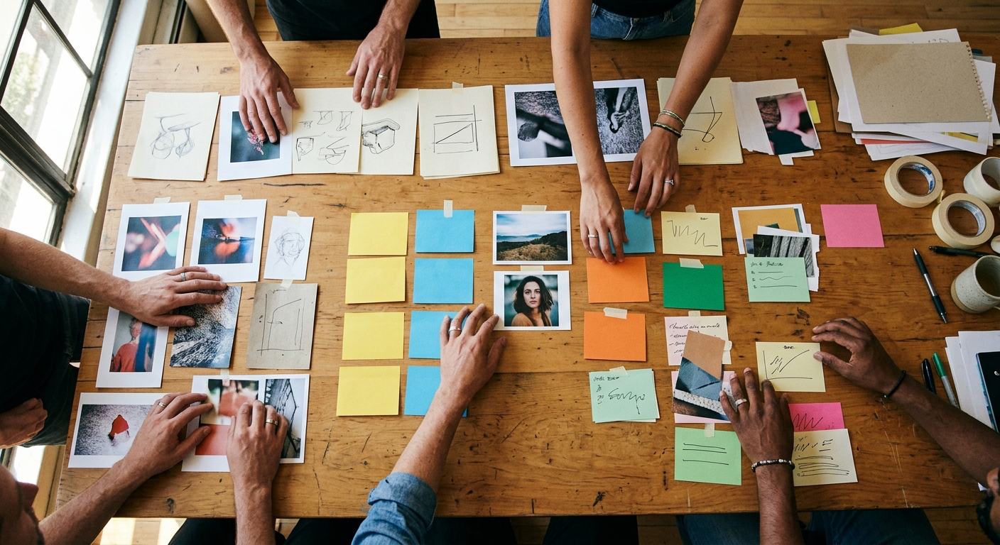

THE COLLABORATIVE ISSUE · 01
A field guide for better thinking
Ideas take
shape together.
Human judgment gives direction.
AI gives momentum.
01
A field guide for better thinking
Human judgment gives direction.
AI gives momentum.
From fragments to a shared story
The strongest decks emerge from a visible rhythm of divergence, selection, and refinement.

A simple operating rhythm
Broad enough to discover.
Focused enough to decide.
The theme should carry the mood—never the meaning.
Design principle 04
COLLABORATIVE INTELLIGENCE
OPERATING RHYTHM / LIVE SYSTEM
DESIGN PRINCIPLE
THE THEME
CARRIES THE MOOD.
NEVER THE MEANING.
Human judgment gives direction.
AI gives momentum.
The process loops.
The direction holds.
keep this close
The theme should carry the mood—never the meaning.
Design principle 04
Make the idea visible.